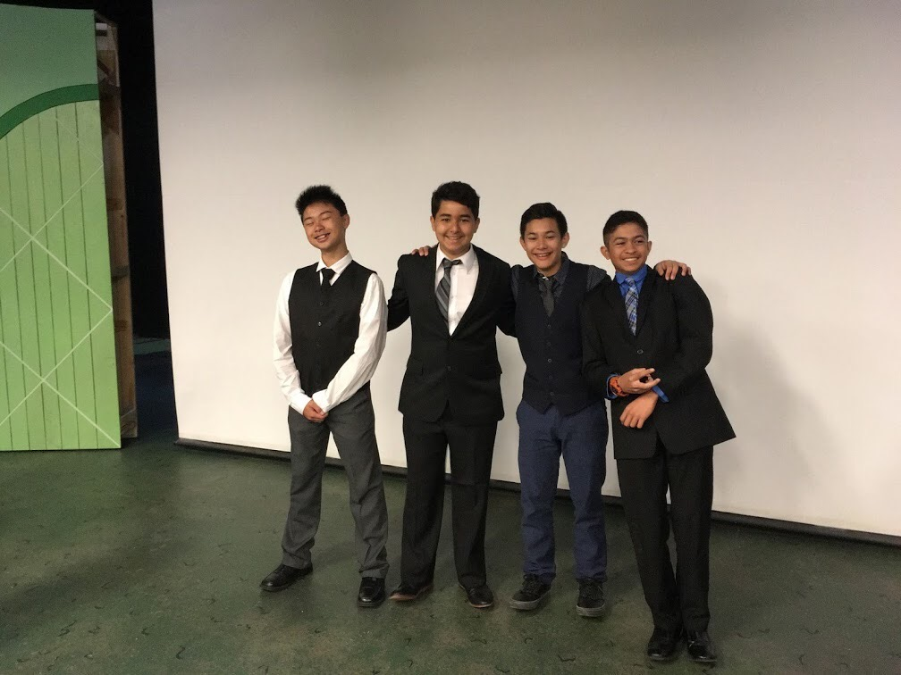

Coby Low
A second year university student, I am driven by staying busy. Working has been a large part of my life since just before starting college, mainly working at restaurants. From the start, I worked at Boudin SF, a famous sourdough bakery and restaurant located on Pier 39. There, I learned to move quickly, precisely, and efficiently. Working in a restaurant had shown me what life outside of school would be like.
Following my employment at Boudin, I began my time at the University of California, Riverside. As I got accustomed to a changing environment. A combination of adapting to online classes and college life, I found myself comfortable enough to return to work. Dissatisfied with my pay, I searched for a new job. I found myself at a popular local sushi restaurant near home called Kazuma Sushi, where for the first time, I was going to school and working at the same time. This job was significantly more work; learning to identify rolls, fish by texture and looks, and an even busier environment than before. After a month, I saw significant improvement in my abilities. My memory and efficiency under pressure had greatly increased going table to table. Furthermore, my communication skills had been honed better than before to ensure that customers would be in and out as fast as possible. Being a host, waiter, and busboy all at the same time gave me a sense of responsibility as usually, I would only have two other coworkers a night. To juggle with so many responsibilities and ensuring quality service towards customers was something I found myself doing most nights.
Other experiences I have comes from what I gathered through my volunteering and academic work. To begin, I conducted research on declining bee populations and its effects on agriculture and the industry. There I learned to articulate raw data from federal and local policy documents to advocate my findings towards my community. Separately, I had performed field and lab work identifying dna samples of varying fish species using DNA barcoding. This research was published in a peer review journal while delivering an oral presentation to fellow peers and researchers at a public exposition. Lastly, in regards to academics, I spent 10 hours identifying and removing an invasive plant species from a selected section of Sunol Regional Wilderness, writing a research paper and giving a presentation to my school. As far as my volunteering experience goes, I spent part of my summer in a food bank, another working to beautify the community park in my city. Finally, I had direct hands-on interaction with bees for honey collection for Gerard'Z Honeybees at El Sol Vineyard to learn more about something I personally found interesting.
As I approach my third year at university, I decided to leave my job to ensure my studies go smoothly. With my collection of experiences and high-stress skills, I believe my remaining years at university will flow well.
Experience
Waiter
• Took orders, bussed tables, seated customers
• Held responsibilities and gave quality service
• Experience with communication, teamwork, memory
Cashier
• Responsible for taking orders and packing food
• Light memory and efficiency training
Research Assistant
• Performed field and labwork regarding DNA barcoding
• Created and delivered a presentation at a public event
• Research published in a peer reviewed journal
Education
UC Riverside
University of California Riverside
University of California Riverside
Portfolio
